作者：献刀
整编：李大虾
又是一年圣诞节。
买圣诞树，挂彩灯，贴圣诞老人卡通图案，送苹果，商业促销......
圣诞节给大家带来了很多快乐和气氛。
同时，就像近代把西方船坚炮利当做怪物，把钢琴、西医都做妖术一样。
只要是没有被官宣过的外来物，都仿佛是带着原罪而来的，都要遭到“义和团”的群起攻之。
所以，很多人觉得中国人过洋节是数典忘祖。
而偏见是愚民的君主。
所以，今天向大家分享一部关于圣诞节的经典作品，希望能够让大家对圣诞节有更深的认识。
这部电影名叫《圣诞快乐》，又名《今夜无战事》，讲述的是一战时期英法德军人在平安夜停熄战火、共度节日的故事。
根据真人真事改编，豆瓣评分8.5。
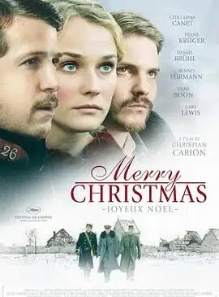
1914年，一战期间，法国一个乡村旁边的小型战场上。
在这里，苏格兰军和法军是一边，德军是另一边，他们各自在挖好的战壕里，对峙着，反复搏杀。
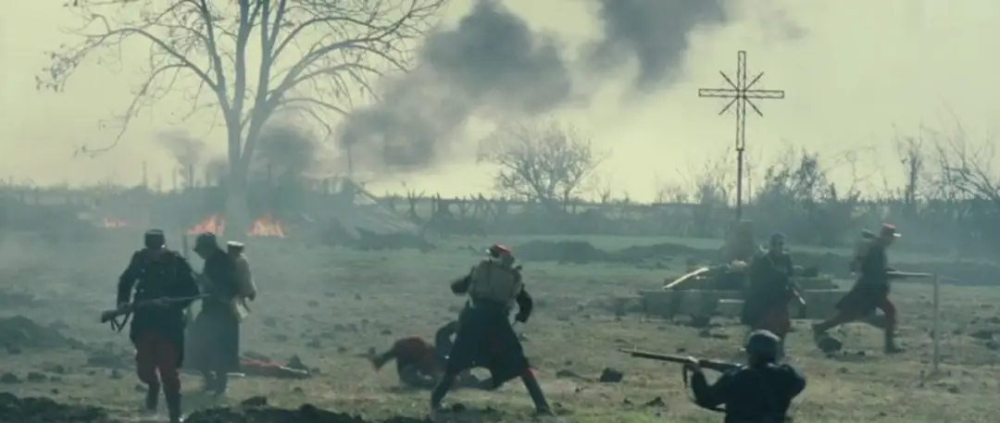
两边战壕中间的空地上，是这些天来阵亡士兵的尸体。
没人敢越出战壕来收回战友尸体，因为一旦失去战壕掩护，就会被敌军发现并射杀。
到了平安夜这一晚，为迎接圣诞，战壕里的苏格兰随军神父，为大家吹起了风笛。
笛声随风飘到了法国友军那里，也飘到了另一边德军战壕里。
一曲毕，德军这边也不甘示弱。
一名男高音出身的德军士兵唱了一首《平安夜》。
优美的歌声和歌曲中包含的平安的信息打动了苏格兰神父，他不禁用风笛为德军男高音伴起了奏。
而男高音士兵听到了伴奏，受到了鼓舞，不顾危险和长官阻拦，一边唱着，一边走出了战壕，竟然来到了空地上。
接着，苏格兰士兵也走出战壕。
这个场面让三方长官心有所动。
于是，他们展开了一次会面，商定平安夜休战一晚，共同庆祝佳节。
于是，士兵们都走到了空地上，由疑惧不定，慢慢开始互相打招呼，交换巧克力和香槟，拿出照片互相向对方介绍自己的爱人。
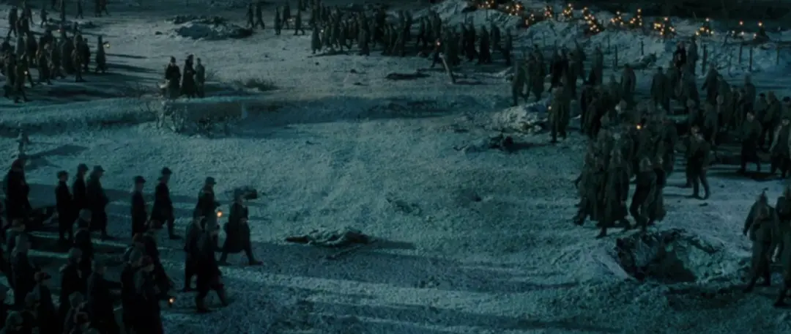
就这样，大家渐渐熟悉了起来，欢笑声越来越多。
德国人和法国人发现，原来对方并不是从小接受的仇恨教育里提到的那种冷血无情的恶魔，而是和自己一样，也有着正常人的情感，一点都不坏。
接着，在苏格兰神父的带领下，大家一起敬拜上帝。
这些人，可能有的来自圣公会，有的来自天主教，有的来自改革宗，有的来自路德宗，甚至有些是犹太教徒，或是无神论者。
但此刻，大家一起听着《万福玛利亚》，一起在神父带领下祈祷。
就这样，平安夜冰天雪地里，大家内心的隔阂被消融了。
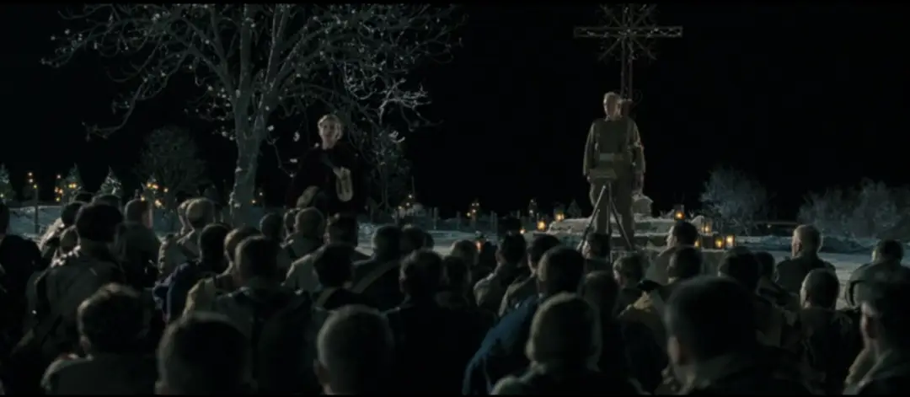
到了第二天，当士兵们各自回到战壕，忽然都开始变得犹疑起来。
因为他们发现，那些所谓的民族仇恨，不过是官方制造的出来的谎话，真正实实在在的，是面前的一个个具体的人，而这些具体的人，和自己并无冤仇。
当这些人昨晚和我一起把酒言欢、共同敬拜上帝。
当曾经用照明弹来发现我、射杀我的人，如今把照明弹像烟花一样升到天空只为博我一笑。
我如何说服自己今天一早继续拿起枪来，像猎杀兔子一样去杀我的新朋友？
微妙纠结的气氛笼罩在战场上。
接着，忽然有人提议，大家继续休战一段时间，以便能够打扫战场，把之前阵亡的战友下葬。
这个想法再次柔软了所有人的心，大家便开始埋葬战友。
看着一个个活生生的人变成了一座座冰冷的新坟包，大家的心再一次被触动。
这场战争的意义是什么？
怀着矛盾和质疑，大家无可奈何地再次回到战壕。
没过一会儿，法军发现德军中尉再次出现在了他们战壕前。
法军中尉不得不提醒他：休战已经结束，你快回到自己的战壕去！
结果德军中尉告诉他：我接到消息，我军将在十分钟后对你们发动炮击，请你们和苏格兰军暂且到我们战壕里避避吧！
于是法军和苏格兰军来到了德军战壕。
躲过炮击后，苏格兰指挥官对德军中尉说：按照惯例，待会儿我军也会炮击你们作为回应。所以，请你们也到我们战壕避避吧！
于是三支部队又一起来到了苏格兰军队战壕。
炮击结束后，苏格兰军队吹奏着《友谊地久天长》，欢送德军回到自己的战壕。
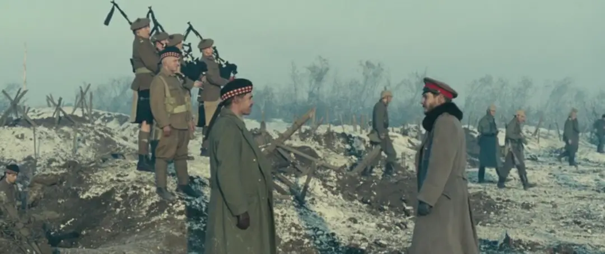
这简直是一个发生在一战的奇迹！
发展到了这一步，他们已经彻底失去了互相厮杀的理由。
士兵们的友谊越来越深厚，互相留下地址，承诺战争结束后保持联络。
然而他们这种行为，很快被后方的上级得知。
上级们都想把各自“通敌”的士兵处决，但考虑到不能一下子处决太多人，于是把他们派遣到了战况最惨烈的战场上去送死。
而残酷的战场上却发生了很多荒谬的事。
比如法军一名少将，也是故事中法军中尉的父亲，跑来前线说要处决阵地上那只小橘猫。
理由是这只法国猫背叛祖国，经常溜达到德军战壕里，和德军打成一片，还充当鸿雁角色，为两军士兵往来传书。
而另一方面，他新添了一个孙子的消息，却正是敌军中尉冒着巨大危险打探来、由小橘猫传递给他们的。
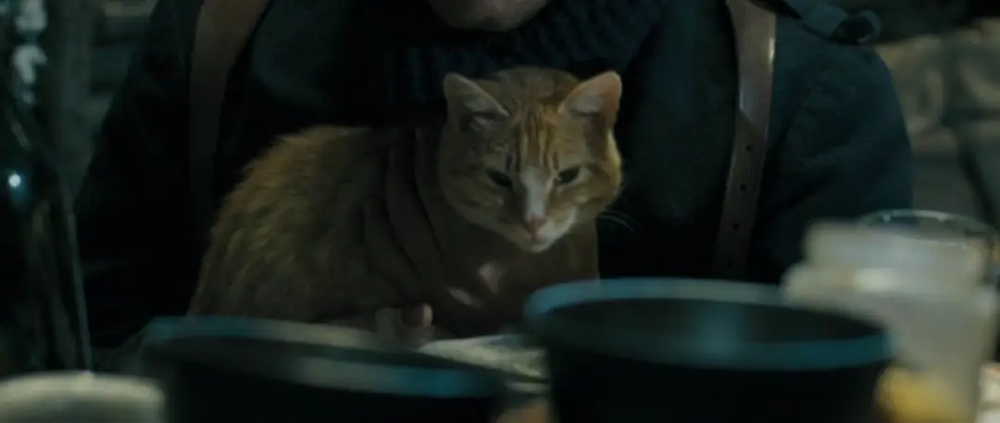
更加讽刺的是。
苏格兰后来派来了一名主教接替原来那位神父。
这位所谓的主教痛斥神父竟然为敌军做弥撒，随后走到士兵们中间，开始扭曲圣经，告诉士兵们他们正在打一场圣战，必须把毫无人性的德国人统统消灭。
当信仰沦为政治的工具，这是何等的可怕。
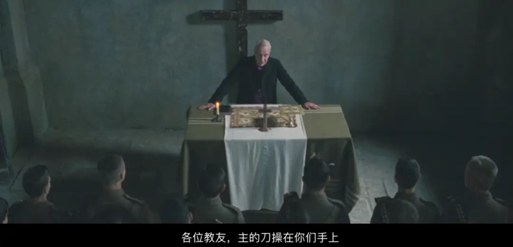
战场上还发生了一件很残酷的事。
当苏格兰军上级来接管军队时，发现战壕外有一名德军士兵在跑动，于是立即下令开枪射杀。
士兵们不肯，就对着天空鸣枪，提醒德军士兵快躲起来。
那个德军士兵却没有往对的方向跑，最终被一名带着丧兄之痛的苏格兰士兵射杀了。
但他们很快发现，被杀的这个人其实并非德军士兵，而是法军副官。
这个副官的家在沦陷区，好心的德军士兵把自己的军服借给他穿，好让他顺利进入沦陷区，回家看望自己的母亲。
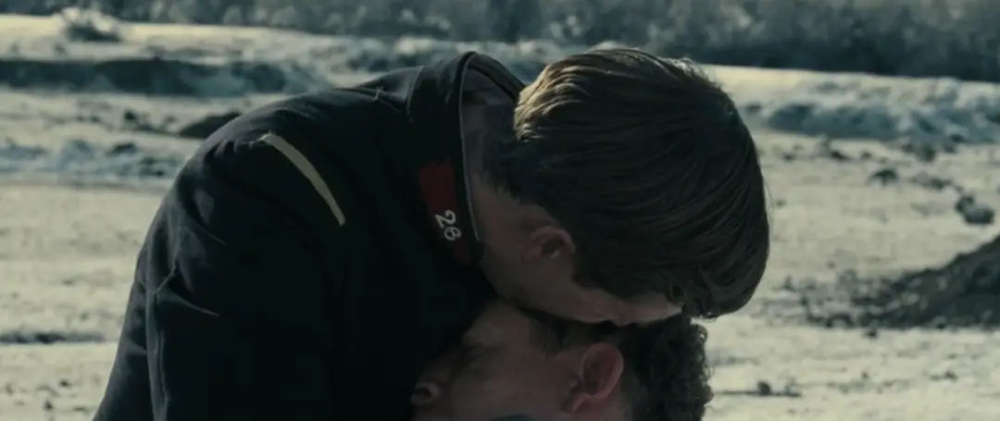
我们发动战争，常常是因为讨厌“敌人”身上那件衣服，所以顺带杀死了穿那衣服的人。
而在这个电影里，该被射杀的是穿了德军军服的法国友军？
还是那件衣服的真正拥有者，那个好心帮助别人家人团圆的德国人呢？
谁是该死的呢？
该死的是那别有用心、充满偏见的仇恨教育和宣传系统！
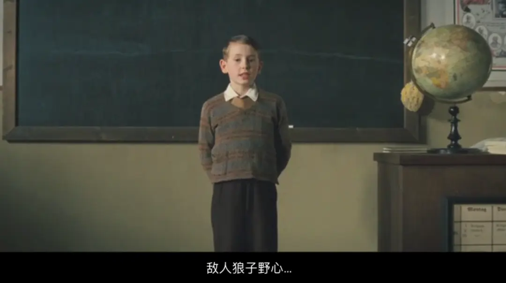
就像现实世界一样，电影并未回避这些残酷和无奈。
平安夜虽然发生了奇迹，但这个奇迹并没有达到我们的预期，可以让这个世界一直免于苦难和罪恶。
那，希望在哪里？
电影最后，那群德军士兵被送往另一个战场的路上，他们唱起了“I’m Dreaming Of Home ”。
他们知道自己即将走向死亡，但平安夜里的奇迹重新唤醒了他们的信仰以及对天家的渴望。
这就是圣诞节的意义。
圣诞节缘于耶稣的降生，他以全人类拯救者的姿态进入这个世界。
这个拯救者曾贬斥这个世界的罪恶，也曾创造奇迹让瞎眼的人重新看见。
可这个拯救者也并非如我们所愿，让这个世界没有战争和眼泪，痛苦与贫穷。
甚至，恰恰让大家大跌眼镜，最终被钉死在十字架上。
可他的出生和作为，却给无数人带来了希望，因为他最终从死里复活，为这个无可救药的世界搭建了一条通往天家的十字架。
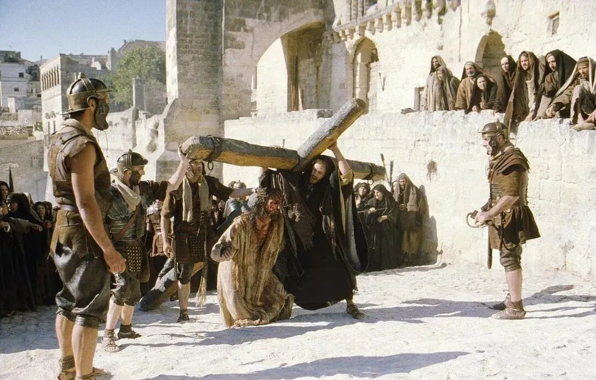
所谓的希望并非看得见的世界，而是人类目之无法触达、理性无法测度、意志无法抵达的永恒。
在无神论的眼中，这恐怕是人类历史上画的最大的超级大饼和精神鸦片。
但对于经历过平安夜奇迹、预尝过那种喜乐和平安的人来说，这不是一个大饼，而是一个可以让他面对疾病、仇恨、死亡的精神力量。
这种精神力量曾为西方提供了一份永恒价值，这种永恒价值成为了人之所以为人而非动物的理由。
而我们文化最大的危机恰好是因为永恒价值的丧失。
而一旦失去了永恒价值的锚定，人之尊严无从谈起，道德也将失去意义和真正的约束，因为自己当下的快乐和享受是所有的意义和目的。
为了达到这种目的，人与人之间的关系无他，只能是弱肉强食和相互利用。
所以，圣诞节的意义，在于它作为一个节日，提醒我们在人类的历史中曾经发生过一件真实的历史事件，那就是耶稣降生。
耶稣不仅凝视了人类处所的深渊，并且曾置身其中，并从这个深渊中实现了跳跃。
这个跳跃给了人类爱的勇气和希望。
所以，对于明白节日之意义的人来说，这个晚上他们的心总是更容易变得柔软。
而能让一个经历过失望、哭泣、罪恶、拒绝和被拒绝并已经刚硬的心变得再次柔软，这是最大的奇迹。
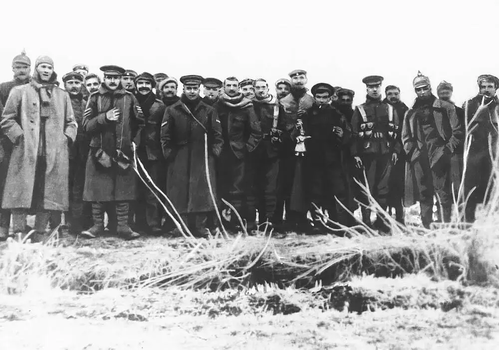
历史真实照片
滑动下方
查看完整诗词
▼
Fraternizers' Hymn: 'I'm Dreaming Of Home' - Philippe Rombi
怀念家乡 - Philippe Rombi
I hear the mountain birds
山中鸟儿清脆地歌唱
The sound of rivers singing
溪水潺潺地流淌
A song I've often heard
协奏成一曲熟悉的歌谣
It flows through me now
在我心里回荡
So clear and so loud
如此清晰响亮
I stand where I am
身在异乡
And forever I'm dreaming of home
永远怀念着家乡
I feel so alone I'm dreaming of home
形单影只 永远怀念着家乡
It's carried in the air
歌声在空中回荡
The breeze of early morning
如清晨微凉的风
I see the land so fair
家乡仿佛就在眼前
My heart opens wide
我敞开心房
There's sadness inside
却发现内心如此悲伤
I stand where I am
身在异乡
And forever I'm dreaming of home
永远怀念着家乡
I feel so alone I'm dreaming of home
孤身一人 永远怀念着家乡
This is no foreign sky
这天空和家乡的天空一样
I see no foreign light
这灯光和家乡的灯光一样
But far away I am
我却离家乡千万里远
From some peaceful land
触摸不到
I'm longing to stand
那片安详的土地
A hand in my hand
无法牵起家人的手
Forever I'm dreaming of home
永远怀念着家乡
I feel so alone I'm dreaming of home
孤身一人 永远怀念着家乡
这里没有挑逗你眼目情欲的小鲜肉
也没有挑动你肉体情欲的段子
更没有膨胀你今生骄傲的鸡血
我们只在乎那些最质朴真诚的作品
在那里我们才能恢复真正的想象力
我们也坚信这才是我们真正需要的

ID:Six_hundred_hits
长按二维码，一键关注
【六百击】
电影评论
尽情分享朋友圈

微信二维码打赏通道